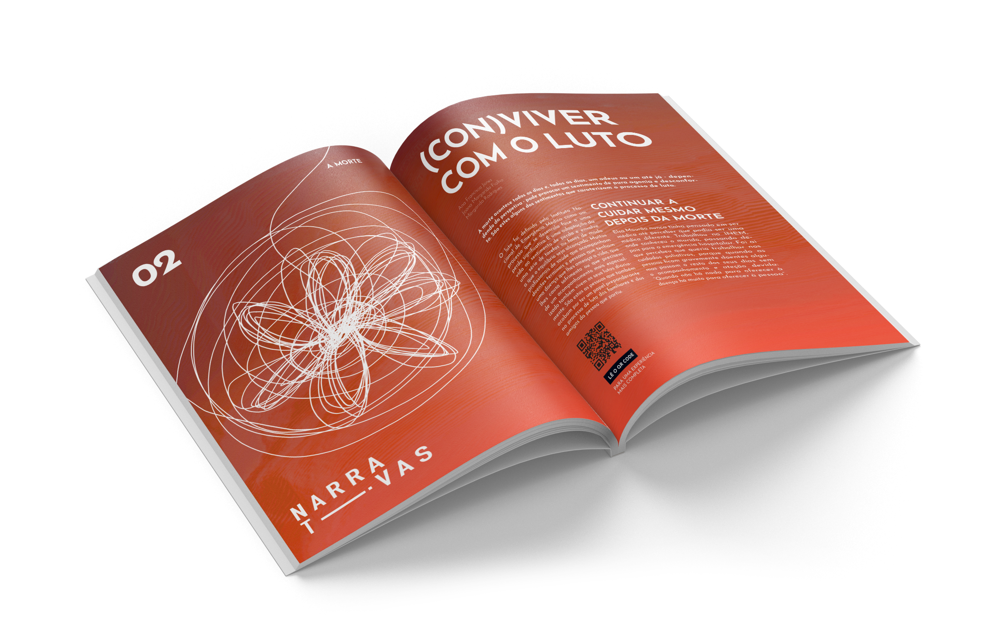

Pressure and Taboo; Death; Perfection; Dependency.
These are the 4 themes of this special edition.
The concept consists in the “untangling” of 4 different lines, who start as a single entity - Narrativas (Narratives). They travel throughout the magazine, giving each theme their own color and identity.

Although the topics could be considered heavy, the stories told have a tone of hope for a better future, and that same look translates to the chosen colors.

Pressure and Taboo
A full baloon; the tiniest pressure can make it pop.


Death
A knot of jumbled thoughts, waiting to be untangled.
Perfection
The constant need of walking in a perfectly constructed line.


Dependency
Two different lines meet, unable to tear apart.
Technical sheet and mission statement (editorial).